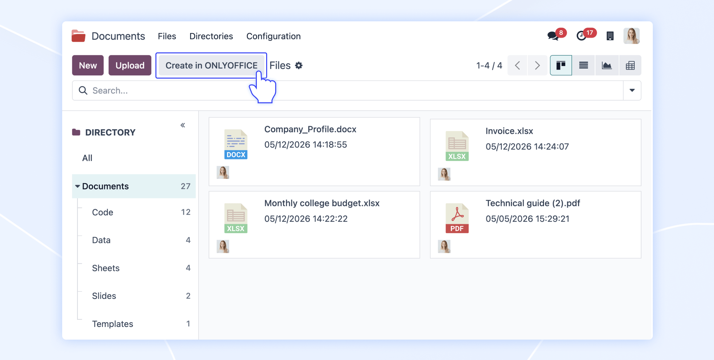
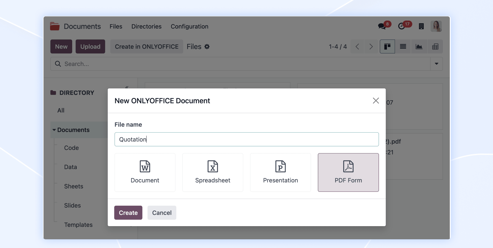
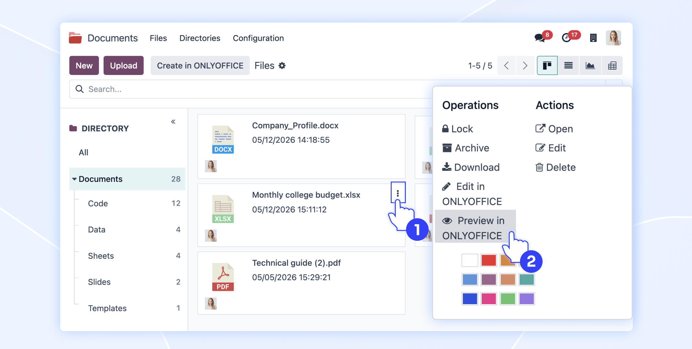
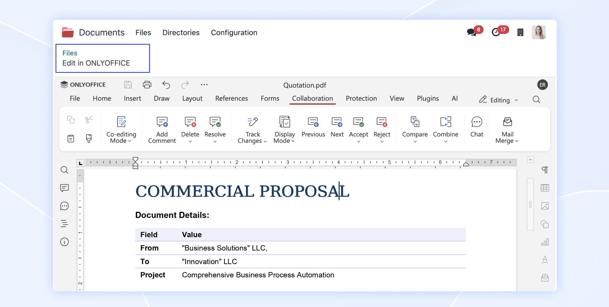
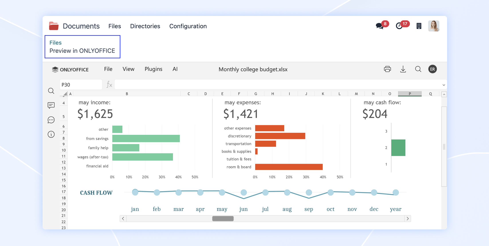
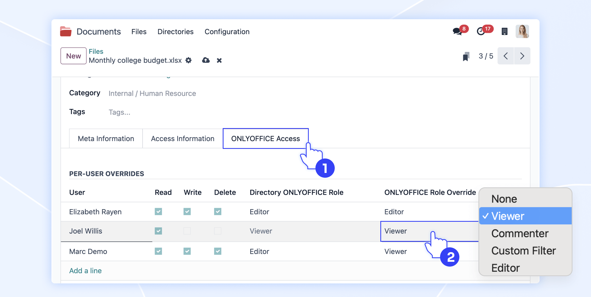
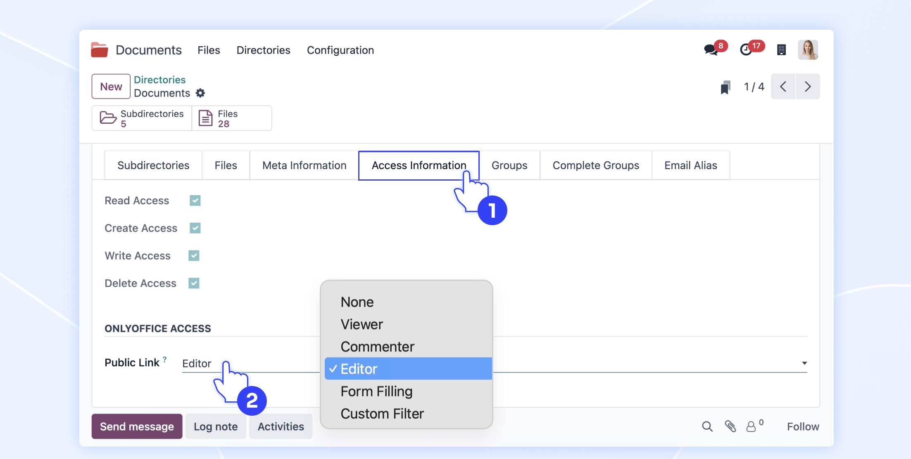

Streamline your daily workflow by handling all your files without ever changing tabs
To create a new file, open any directory in the Documents module and click the Create in ONLYOFFICE button in the top panel.

A dialog window lets you select the file format and specify the document name. After you confirm, the file automatically opens in the ONLYOFFICE editor within your current browser tab.

You can easily open and work on previously created documents. Open the file context menu and select Edit in ONLYOFFICE to modify the document, or choose Preview in ONLYOFFICE to view it.

The document opens directly in the ONLYOFFICE interface, keeping you on the exact same page.


Keep your files secure by configuring access rights from the document card. Open the Actions menu, go to the document card, and find the ONLYOFFICE Access tab. You can assign specific permissions using the User field and define their exact access level using the ONLYOFFICE Role Override field.

The app also lets you configure access rights for entire folders. Open the directory context menu, click Edit, and navigate to the Access Information tab. Under the ONLYOFFICE Access section, you can select the correct access level for the Public link parameter.
